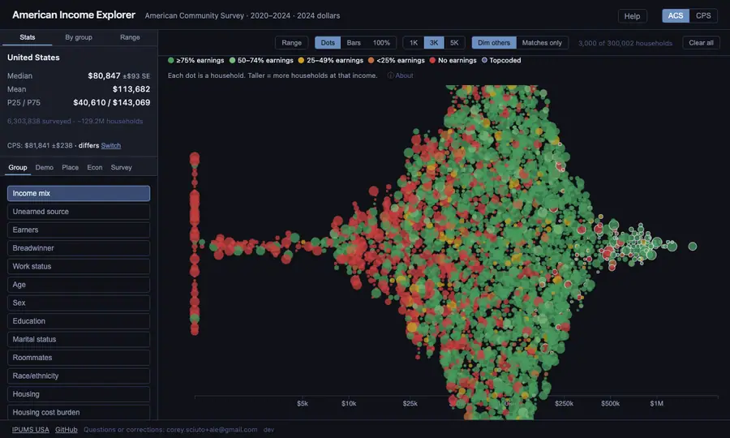
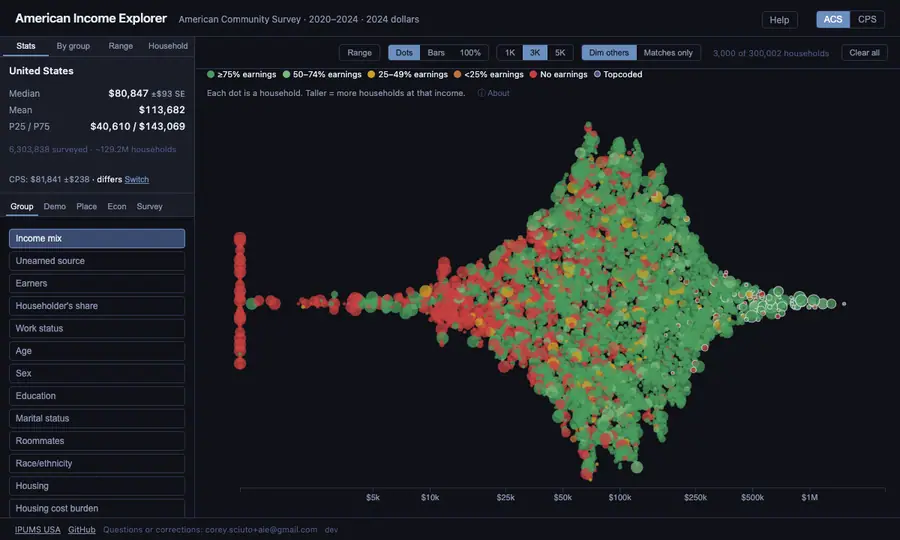
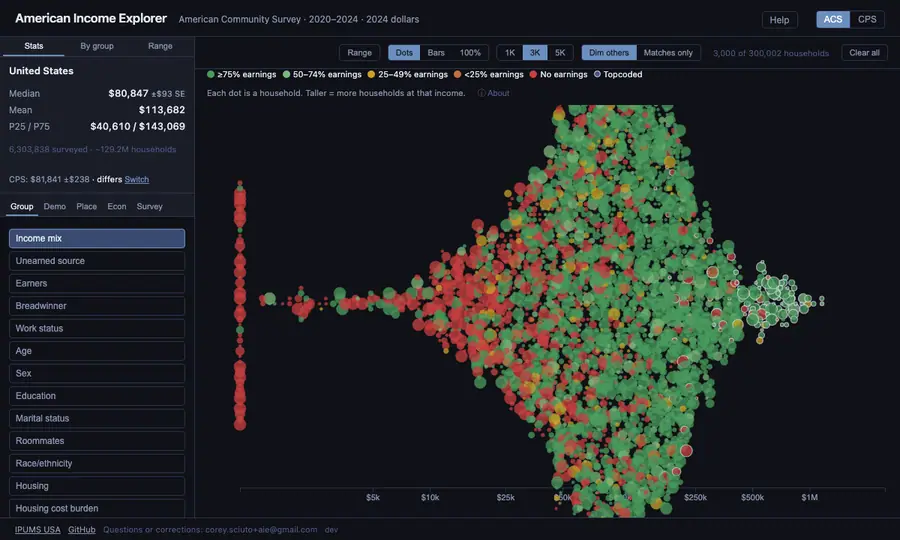
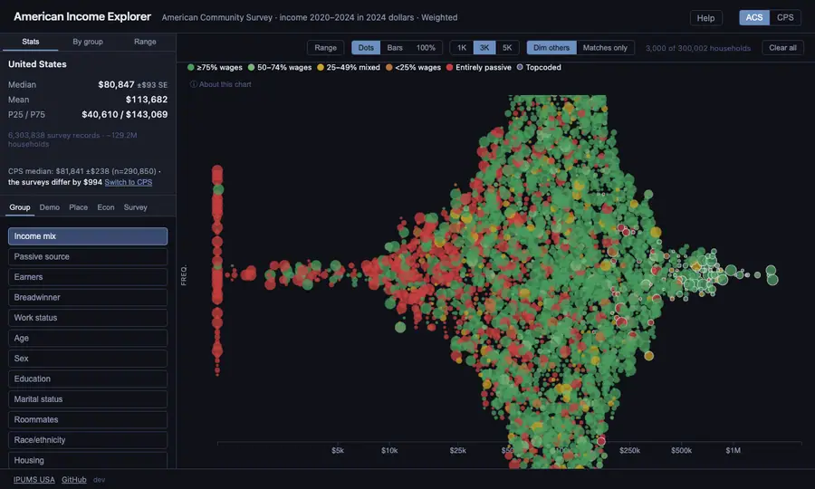
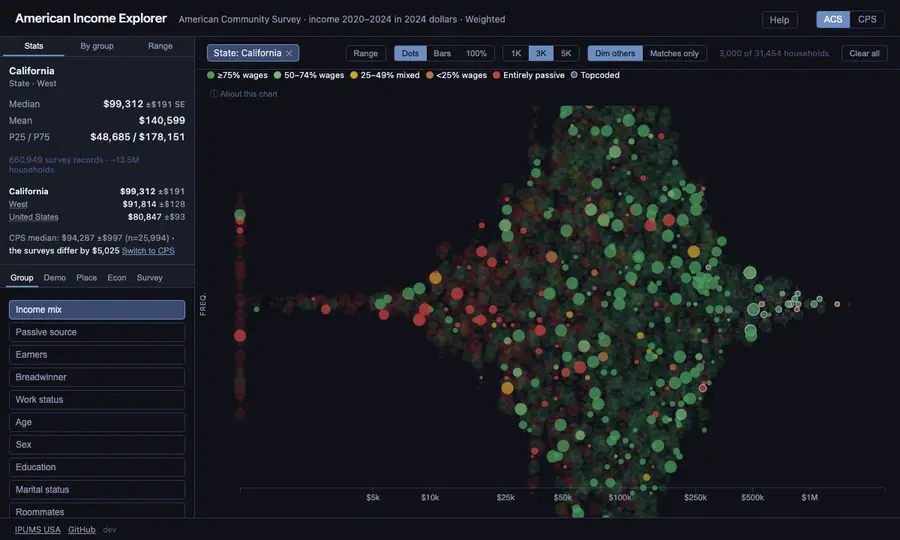
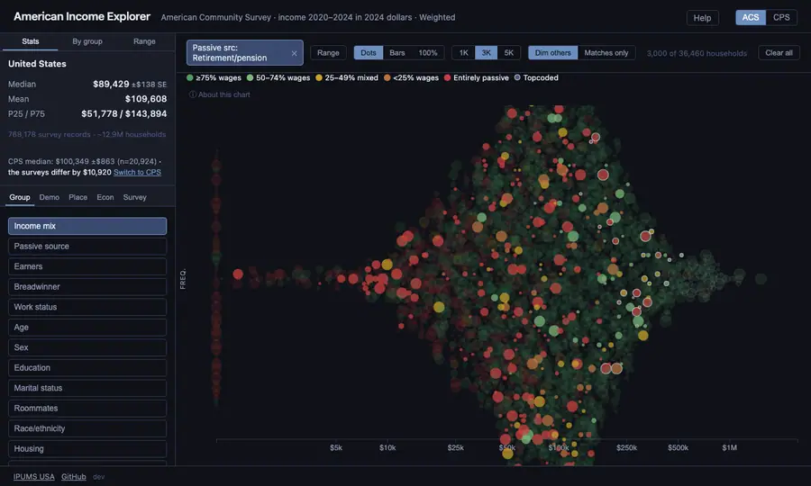

Reading the chart
Household income runs left to right on a log scale, so $10k to $100k takes the same space as $100k to $1M. Each dot is one surveyed household; a bigger dot stands for more households like it. Point at a dot to see that household: its income, who lives there, where, and how it earns.
Colors come from the Group tab. Pick a grouping, such as age, to color every dot by it; click a color in the legend to keep just that group.

Choosing households
The Demo, Econ and Survey tabs hold filters: age, education, work status, housing, income sources, the survey year and more. Each choice appears as a chip above the chart; click a chip to remove it, or Clear all to start over. The figures at the top left always describe the households you've chosen.
Picking two values of the same filter (say, ages 55–64 and 65+) includes both.

Places
The Place tab looks at one place at a time: the whole country, a region, a state, a metro area, or a local area such as Malden & Medford. Type part of a name; each result says what kind of place it is. Local areas have about 100,000 people or more, the smallest areas the Census Bureau publishes household records for.
Under the figures you'll see the same median for each larger area containing your place, so you can tell at a glance whether it runs high or low. Click any of them, or the path at the top of the tab, to move up.
To compare two places, open each in its own browser tab. The address keeps every choice, so you can also bookmark or share a view.

An income range
Click Range and drag across the chart to pick an income band, such as $100k–$250k. The Range panel at the top left then shows what share of households fall in it and their median and mean. Click the band's chip to clear it.

Dots, bars and 100%
- Dots show individual households. Bars stack the number of households at each income, colored by group. 100% shows each income's mix of groups as shares.
- 1K 3K 5K set how many dots to draw. A choice greys out when a smaller one already shows every household.
- Dim others keeps the same dots as you change filters and fades the ones that don't match. Matches only draws only the households you've chosen, which shows a narrow group's own spread.

Two surveys
Switch surveys at the top right.
- ACS (American Community Survey, the default): about 6 million households. Best for places, narrow groups and housing costs.
- CPS (Current Population Survey): about 290,000 households, but about 50 questions on income against the ACS's 8. Best for where income comes from (pensions, investments, earnings) and the official national figures. It covers the US, regions, states and about 60 of the largest metro areas, with wider margins of error than the ACS.
When the same group exists in both, a line under the figures gives the other survey's median and says whether the gap is bigger than chance. Gaps are normal: the surveys ask different questions.

Reading the numbers
- Median is the middle household: half earn more, half less. P25 / P75 mark the quarter points.
- ± SE is the standard error: the true median is within about two of these of the figure 95% of the time.
- A figure with no ± comes from the explorer's sample of households (300,000 nationally, up to 300 per local area) rather than the full survey, for example when two values of a filter are chosen. Treat it as a rough guide.
- Warnings appear under 500 and under 200 survey households; under 50 there's no figure at all.
- A dash (—) beside a larger area means that combination wasn't computed.
- "Topcoded" households (a thin light outline) had an income above the survey's cap, so their true income is at least what's shown.